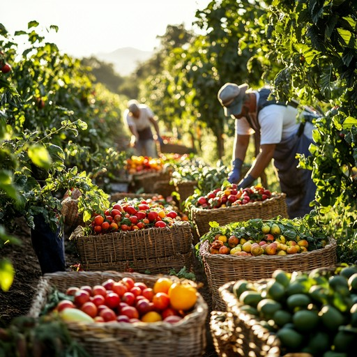

M-Digital Food Chain
A technology-enabled food distribution ecosystem connecting farmers, suppliers, retailers and consumers.
Streamlining the Food Value Chain
M-Digital Food Chain links every stage of the food supply chain — from farm to shelf — on a single digital platform. Farmers gain direct access to buyers, suppliers can manage inventory and logistics more efficiently, and consumers benefit from greater transparency about where their food comes from, reducing waste and middleman markups along the way.

Farmer Onboarded
Smallholder farmers register and list what they're producing.
Supply Matched
Suppliers and buyers connect directly through the platform.

Logistics Coordinated
Produce moves through tracked, planned delivery routes.

Retailer & Consumer Access
Verified supply reaches shelves and homes, traceable end to end.
Farmer Onboarded
Smallholder farmers register and list what they're producing, creating a verified digital profile that buyers can trust from day one.
Our Services & Offerings
Farmer Onboarding
Digital profiles that connect smallholder farmers directly to buyers.
Supply & Inventory
Real-time stock tracking across suppliers and distribution points.
Logistics Coordination
Route and delivery planning to move produce faster and fresher.
Farm-to-Table Tracing
Transparency tools so buyers can trace where their food originates.
Retailer & Consumer Access
A marketplace layer connecting retailers and consumers to verified supply.
Market Insights
Pricing and demand data to help producers and buyers plan better.
Closing the Gap Between Farm and Market
Across much of Ghana and the wider region, food loses a significant share of its value — and freshness — before it ever reaches a buyer. Produce often passes through several informal intermediaries, each adding cost and delay without adding visibility. Smallholder farmers frequently have no reliable way to know what buyers actually need, when, or at what price, which leaves both sides guessing and food sitting longer than it should.
M-Digital Food Chain was built to close that gap. By giving farmers, suppliers, logistics partners and retailers a shared digital layer, produce can be listed, matched, tracked and delivered with far less friction. A farmer in Ghana can list a harvest and be matched with a buyer the same week rather than relying on word of mouth; a retailer can see where their stock actually came from; a consumer can trace a product back to the farm that grew it. The result is less spoilage, fairer pricing for producers, and a supply chain that more people can actually see into.
Gallery
A look at the platform in action, from the field to the marketplace.


Explore M-Digital Food Chain
See how the platform is streamlining food distribution across the region.